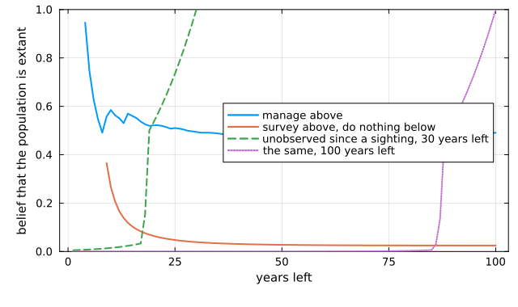

Replication: when to stop managing or surveying a cryptic species (Chadès et al. 2008)
Simon Frost
- Replications of published analyses
- The paper
- The schedule after a sighting
- The 30-year horizon
- What the schedule is worth
- Perfect detection
- Why the long-horizon method is needed
- What was not reproduced
- What to take from this
Replications of published analyses
This vignette reproduces the schedule published for the Sumatran tiger: manage for 12 years after the last sighting, then survey for 3, then stop. It needs adaptive_management with a state that moves (transitions) and, because the schedule only settles when many years remain, the long-horizon method (method=:vectors). The comparisons are in the test suite (test/fixtures/replications/chades2008_tiger.json, test/test_replications.jl).
The paper
Chadès, McDonald-Madden, McCarthy, Wintle, Linkie and Possingham (2008), “When to stop managing or surveying cryptic threatened species”, Proceedings of the National Academy of Sciences 105(37):13936–13940, doi:10.1073/pnas.0805265105. All rights reserved; only the parameter values of its Table S1 and its published schedule are used here.
Decision. Each year, what to do in a reserve (Kerinci Seblat National Park) where tigers may or may not persist.
Actions. Do nothing (nothing, the baseline; the paper’s “surrender”), manage (anti-poaching patrols) or survey.
States. The population is extant or extinct. Extinction is final.
Movement. An extant population goes extinct in a year with probability 0.05816 if managed and 0.1 otherwise.
Information. Tigers are detected only if extant: with probability 0.78193 in a year of surveying and 0.01 otherwise.
Outcome. Money: the paper’s valuation, in US dollars a year. An extant population is valued at 175,133 a year (the donor funding raised for tiger conservation in the park), managing costs 18,784 a year and surveying 10,840. Nothing is discounted. Nothing here is valued by this package.
Two points of the model are not in a table and are our reading of the paper:
- The paper prints no reward table. Its Methods say that the reward “defines for each pair action-state the cost of an action and the benefits of a state”, and the equations of its appendix take the reward on the current state. So a year is worth the value if the population is extant, less the cost of the action taken.
- The belief update of the appendix applies the observation to the state after the year’s transition, which is
signal_of=:next.
using DecisionAnalysis
include(joinpath("..", "_common.jl"))
using Plots
# Table S1 of the supporting information, as exact numbers.
const VALUE, COST_MANAGE, COST_SURVEY = 175_133, 18_784, 10_840
const EXTINCTION, EXTINCTION_MANAGED = 1 // 10, 5_816 // 100_000
const DETECTION, DETECTION_SURVEYED = 1 // 100, 78_193 // 100_000
const ACTIONS = [:nothing, :manage, :survey]
const STATES = [:extant, :extinct]
const R = Rational{BigInt}
table = PayoffTable(ACTIONS, STATES,
R[VALUE 0; VALUE-COST_MANAGE -COST_MANAGE;
VALUE-COST_SURVEY -COST_SURVEY])
dies(q) = R[1-q 0; q 1] # T[next, present]; extinction is absorbing
moves = (; nothing=dies(EXTINCTION), manage=dies(EXTINCTION_MANAGED),
survey=dies(EXTINCTION))
looks(d) = Experiment(R[1-d 1; d 0]; signals=[:absent, :present], states=STATES)
watch(survey_detection) = (; nothing=looks(DETECTION), manage=looks(DETECTION),
survey=looks(survey_detection))
seen = watch(DETECTION_SURVEYED)
# The tigers have just been seen: they are extant for certain.
sighted = DecisionProblem(table, R[1, 0]; baseline=:nothing)
md_table(["action", "dollars a year if extant", "if extinct"],
[Any[a, Int(table.Q[i, 1]), Int(table.Q[i, 2])] for (i, a) in enumerate(ACTIONS)])| action | dollars a year if extant | if extinct |
|---|---|---|
nothing | 175133 | 0 |
manage | 156349 | -18784 |
survey | 164293 | -10840 |
The schedule after a sighting
The value function with n years left does not depend on the horizon, so one run over 100 years gives the best action at every belief and for every number of years left (value_function). Following it from a sighting, with no tiger seen afterwards:
solution = adaptive_management(sighted, seen; horizon=100, transitions=moves,
signal_of=:next, method=:vectors, passive=false, depth=0)
# What is done year by year after a sighting with `years` left, if no tiger is seen
# again, and the belief that the population is extant before each decision.
function unobserved(result, experiments, years)
belief, path, beliefs = R[1, 0], Symbol[], R[]
for n in years:-1:1
pieces = result.value_function[n]
a = pieces.actions[argmax(pieces.vectors * belief)]
push!(path, a)
push!(beliefs, belief[1])
joint = (moves[a] * belief) .* experiments[a].likelihood[1, :]
belief = joint ./ sum(joint)
end
return path, beliefs
end
years_of(path, a) = count(==(a), path)
path, beliefs = unobserved(solution, seen, 100)
md_table(["years after the sighting", "action"],
[Any["1 to 12", path[1]], Any["13 to 15", path[13]], Any["16 on", path[16]]])| years after the sighting | action |
|---|---|
| 1 to 12 | manage |
| 13 to 15 | survey |
| 16 on | nothing |
path == vcat(fill(:manage, 12), fill(:survey, 3), fill(:nothing, 85))truemd_table(["quantity", "paper (Results, Fig. 1)", "this package, 100 years left"],
[["years of managing after a sighting", 12, years_of(path, :manage)],
["then years of surveying", 3, years_of(path, :survey)]])| quantity | paper (Results, Fig. 1) | this package, 100 years left |
|---|---|---|
| years of managing after a sighting | 12 | 12 |
| then years of surveying | 3 | 3 |
The published schedule is reproduced.
The 30-year horizon
The paper’s Fig. 2 is drawn for a 30-year horizon. The schedule depends on how many years are left when the tigers are last seen:
schedules = map(1:100) do years
shorter, _ = unobserved(solution, seen, years)
return (years_of(shorter, :manage), years_of(shorter, :survey))
end
md_table(["years left at the sighting", "years of managing", "then years of surveying"],
[Any[h, schedules[h]...] for h in (10, 20, 30, 40, 50, 57, 60, 80, 100)])| years left at the sighting | years of managing | then years of surveying |
|---|---|---|
| 10 | 5 | 0 |
| 20 | 10 | 1 |
| 30 | 11 | 2 |
| 40 | 12 | 2 |
| 50 | 12 | 2 |
| 57 | 12 | 3 |
| 60 | 12 | 3 |
| 80 | 12 | 3 |
| 100 | 12 | 3 |
first_settled = findfirst(h -> all(==((12, 3)), schedules[h:end]), 1:100)57is the shortest horizon from which the schedule is 12 and 3 (up to 100 years). With exactly 30 years left the exact solution manages for 11 years and surveys for 2. So the published 12 and 3 are the schedule of the paper’s decision graph (its Fig. 1), which is the long-run one, and not what a strict 30-year calculation gives from a sighting in its first year. The paper does not say which was meant.
The difference comes from one year in which the belief is close to the point of switching. The beliefs at which the best action changes, by years left:
# The beliefs at which the best action changes with n years left: where neighbouring
# lines of the value function with different actions cross.
function switches(result, n)
pieces = result.value_function[n]
G = pieces.vectors
order = sortperm([G[i, 1] - G[i, 2] for i in axes(G, 1)])
return [(pieces.actions[i], pieces.actions[j],
(G[j, 2] - G[i, 2]) / ((G[i, 1] - G[i, 2]) - (G[j, 1] - G[j, 2])))
for (i, j) in zip(order[1:(end - 1)], order[2:end])
if pieces.actions[i] != pieces.actions[j]]
end
# The belief above which `action` is best with n years left, or `nothing` if it is
# never the best action then.
function best_above(result, n, action)
found = [b for (_, above, b) in switches(result, n) if above == action]
return isempty(found) ? nothing : Float64(only(found))
end
shown(x) = x === nothing ? "never" : x
md_table(["years left", "survey above this belief", "manage above this belief"],
[Any[n, shown(best_above(solution, n, :survey)),
shown(best_above(solution, n, :manage))]
for n in (2, 5, 10, 19, 30, 60, 100)]; digits=3)| years left | survey above this belief | manage above this belief |
|---|---|---|
| 2 | never | never |
| 5 | never | 0.745 |
| 10 | 0.267 | 0.585 |
| 19 | 0.07 | 0.519 |
| 30 | 0.039 | 0.494 |
| 60 | 0.026 | 0.494 |
| 100 | 0.025 | 0.491 |
thirty, thirty_beliefs = unobserved(solution, seen, 30)
md_table(["quantity", "value"],
[["belief after 11 unobserved years of managing", Float64(thirty_beliefs[12])],
["belief for managing, 19 years left", best_above(solution, 19, :manage)],
["belief for managing, 100 years left", best_above(solution, 100, :manage)]];
digits=3)| quantity | value |
|---|---|
| belief after 11 unobserved years of managing | 0.501 |
| belief for managing, 19 years left | 0.519 |
| belief for managing, 100 years left | 0.491 |
After 11 unobserved years the belief is just above the long-run switching point and just below the one that applies with 19 years left. The twelfth year is managed in the long run and surveyed in the 30-year problem.
managed = [n for n in 1:100 if best_above(solution, n, :manage) !== nothing]
surveyed = [n for n in 1:100 if best_above(solution, n, :survey) !== nothing]
plot(managed, [best_above(solution, n, :manage) for n in managed];
label="manage above", xlabel="years left",
ylabel="belief that the population is extant", ylims=(0, 1), legend=:right)
plot!(surveyed, [best_above(solution, n, :survey) for n in surveyed];
label="survey above, do nothing below")
plot!(30:-1:1, Float64.(thirty_beliefs); label="unobserved since a sighting, 30 years left",
linestyle=:dash)
plot!(100:-1:1, Float64.(beliefs); label="the same, 100 years left", linestyle=:dot)
This is the paper’s Fig. 2 with its two boundaries. With few years left neither managing nor surveying is worth its cost at any belief, which is why the curves start late.
What the schedule is worth
The paper reports the schedule, not its value. Over 30 years from a sighting, with the paper’s valuation:
thirty_years = adaptive_management(sighted, seen; horizon=30, transitions=moves,
signal_of=:next, method=:vectors, depth=0)
md_table(["way of managing", "dollars over 30 years", "gain over doing nothing"],
[[label, round(Int, v), round(Int, v - thirty_years.baseline)]
for (label, v) in
(("do nothing (baseline)", thirty_years.baseline),
("no learning (fixed plan)", thirty_years.no_learning),
("passive adaptive management", thirty_years.passive),
("active adaptive management", thirty_years.active),
("state seen every year", thirty_years.perfect))])| way of managing | dollars over 30 years | gain over doing nothing |
|---|---|---|
| do nothing (baseline) | 1677089 | 0 |
| no learning (fixed plan) | 2076427 | 399338 |
| passive adaptive management | 2080882 | 403793 |
| active adaptive management | 2114197 | 437108 |
| state seen every year | 2249230 | 572141 |
count(==(:manage), thirty_years.plan), count(==(:survey), thirty_years.plan)(18, 0)are the years of managing and of surveying in the fixed plan: a manager who ignores what is seen manages for a fixed spell and never surveys, since a survey changes nothing unless its result is used. These values are ours, computed from the paper’s inputs; they are not published results.
Perfect detection
The caption of the paper’s Fig. S2 says that when detection is perfect “we survey only once before surrendering (species absent) or managing (species present)”.
certain = adaptive_management(sighted, watch(1); horizon=100, transitions=moves,
signal_of=:next, method=:vectors, passive=false, depth=0)
sure, _ = unobserved(certain, watch(1), 100)
md_table(["quantity", "paper (Fig. S2)", "this package"],
[["years of surveying with perfect detection", 1, years_of(sure, :survey)]])| quantity | paper (Fig. S2) | this package |
|---|---|---|
| years of surveying with perfect detection | 1 | 1 |
Why the long-horizon method is needed
The recursion over beliefs evaluates every belief that can be reached, and here their number grows three- to fourfold with each year. The value function itself stays a handful of lines:
reached = [adaptive_management(sighted, seen; horizon=h, transitions=moves,
signal_of=:next, depth=0, passive=false).beliefs_evaluated
for h in 4:2:12]
md_table(["years", "beliefs evaluated (`method=:beliefs`)",
"lines in the value function (`method=:vectors`)"],
[[h, n, size(solution.value_function[h].vectors, 1)]
for (h, n) in zip(4:2:12, reached)])| years | beliefs evaluated (method=:beliefs) | lines in the value function (method=:vectors) |
|---|---|---|
| 4 | 175 | 2 |
| 6 | 2342 | 3 |
| 8 | 24106 | 5 |
| 10 | 225769 | 6 |
| 12 | 2053089 | 8 |
maximum(size(pieces.vectors, 1) for pieces in solution.value_function)20is the largest number of lines over the 100 years. The two methods give the same values wherever both can run (test/test_adaptive.jl).
What was not reproduced
- The analytic approximations for the switching beliefs and the durations. They are printed as images, and their text could not be transcribed reliably.
- Figs. 3, 4, S1 and S2, which give curves and no numbers, apart from the statement on perfect detection above.
- The other species of Table S2, for which only ratios of value to cost are given.
- The main text quotes slightly different values from Table S1 (for example a cost of managing of 18,744). The test suite runs both sets; the schedules are the same.
What to take from this
- The published schedule, 12 years of managing and then 3 of surveying, is the exact long-run solution of the paper’s model with the inputs of its Table S1.
- For a sighting with exactly 30 years left the exact solution is 11 and 2. The difference is one year in which the belief is within 0.02 of the switching point.
- Every value is in the paper’s own dollars and beside the baseline of doing nothing.